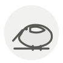

Bécasse ◆
Woodcock
| Nom latin | Scolopax rusticola |
|---|---|
| Famille | Viandes & volailles |
| Origine | Sous-bois humides |
| Saison | octobre – janvier |
| Goût | Charnu · Riche · Terreux · Musqué |
| Prix courant | 30–60 €/pièce |
Ce que c’est
La bécasse n’avale pas de gravier : son gésier n’en contient aucun, et l’oiseau se rôtit non vidé, l’intérieur étalé sur le canapé posé dessous. Ses yeux sont placés si haut et si en arrière du crâne qu’elle voit à 360° sans bouger la tête, ce qui la rend presque impossible à surprendre.
En cuisine
Quinze minutes à 230 °C, le canapé dessous pour recueillir tout ce qui coule. Hachez l’intérieur avec un peu de beurre, une pointe d’échalote et un trait de citron, tartinez le canapé et remettez-le deux minutes au four.
S’accorde avec
Beurre Armagnac Baie de genièvre Échalote Poivre noir Citron Cèpe Foie gras
De saison en même temps
Lièvre Venaison Sanglier figatellu Oie Lamproie
Une erreur ici, ou un oubli ? Dites-le nous